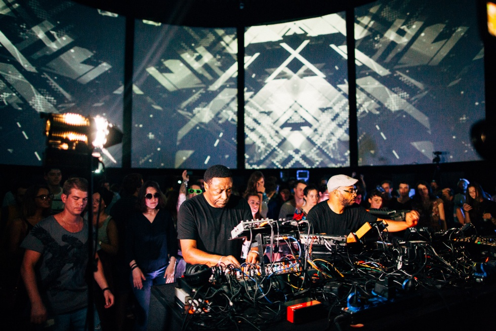
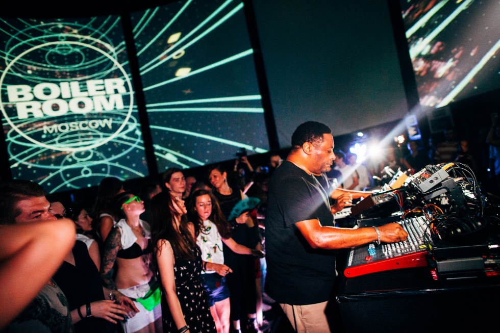

“Still Underground”: Octave One Keeping It Live
{kind=link}
When Detroit stalwarts Octave One played their high-energy gig for us in Moscow last year, there were several fresh selections peppered amongst their more recognisable repertoire that triggered the curiosity of their longterm fans. As it turns out, the broadcast was a catalyst for the completion of their overdue Burn It Down studio album that drops next month.
“To be honest, that set was what made us get it together and actually record the album,” Lenny from Octave One told us in a laid-back chat with our very own Michail Stangl and Berlin-resident Detroit ex-pat Derek Plaslaiko. “Because we played so much unreleased material, and people were asking for names of tracks, and where they could get it. But they couldn’t get it,” he laughs.
Lenny Burden, along with his brother Lawrence, represent the core members of Octave One, a distinct family affair with additional revolving appearances from brothers Lynell, Lorne and Lance. It was Lenny and Lawrence who delivered one of the trademark hardware-driven live performances in Moscow last summer, furiously pounding away at their machines; and the response from fans would have to represent a good result, by any definition.
“The fans are like, these are the songs we want. Okay then, these are the songs we’ll put out. There were people ripping them off the Boiler Room, cutting them and making their own files. We’d hear songs in DJ sets that we knew weren’t even released yet,” laughs Lenny. “The problem with them ripping it off something like Boiler Room, is it’s not how we conceived that record to be heard, outside of that particular performance. It made sense in that context, but when it’s ripped it’s not a proper representation of what it should sound like.”
{kind=link}

Octave One first appeared on the radar in their original home town of Detroit all the way back in 1990, with the release of “I Believe” on the legendary Transmat stable. However, their live performances, which have proved so defining for the act, came a lot later. For the first decade or so they were making what Lenny terms as ‘DJ food’ to release on their own 430 West imprint; the one of the few at that early stage who were making records strictly for the DJs.
“We really enjoyed this at the time, as there weren’t a lot of people doing this. And there wasn’t a lot of marketing behind our records, very little. We were the DJ’s secret. Once we started playing live though, we developed our songs in a different direction, and we were making music now for the live show then. We don’t even care about the slow build, we’re just ‘whoosh’.”
You’ll hear Lenny and Lawrence both repeatedly refer to their current setup as a “band”; it’s an unusual use of language for live electronic performers, though it’s representative both of their own background working as touring roadies, as well as the nature of their live show; made exclusively using hardware from Roland, Moog, Dave Smith Instruments and beyond.
“No laptop, no computer. Only hardware. It’s fun, and it’s unpredictable.”
“No laptop, no computer. Only hardware. It’s fun, and it’s unpredictable. We should be offering something different to what a DJ does,” Lawrence adds. “It’s not rehearsed, and it’s heavily improvised. I don’t know where Lenny is gonna go, he might shoot off in a particular direction by adding a few filter effects, and I might end up going in this direction by adding some effects on top of those filters. Drop some kicks, play with some high hats. So we improvise like a band would improvise. Sometimes he might glance over at me like he’s pissed off,” he laughs. “We were roadies for other bands, perhaps that’s where the whole ‘band’ context comes from I guess,” says Lenny. “It’s not just a couple of producers on stage, we interact with the crowd, we’re playing off of each other. We want to be an electronic band, we want to have the energy.”
The pair point to their use of hardware as playing a huge part in making this spontaneity and improvisation possible; defining their sound, both on stage as well as in the studio. “What you don’t get really when you use software is the uniqueness of that piece of gear. We experimented with recording with soft synths in the past, but we didn’t end up using it. What we found is that we were making ‘deliberate’ music; it wasn’t ‘accidental’ music anymore. But our music is inherently accidental. I didn’t go in and intend to make this particular record, I just started working with this piece of machinery and it just came out that way.”
And their new Burn It Down album is definitely an effort that represents the uncomplicated energy of their live performances. In stark contrast to the seriousness of a lot of modern European techno, there’s a charming light touch to all of the material here, from hugely energetic cuts like “Eighth Wonder” and “Afterglow” that made such a big impact in that performance, to the unabashed upbeat vocal of “Jazzo / Lose Myself”. The album showcases a visceral approach that’s situated at a comfortable distance from techno purism, or even the hi-tech philosophising that characterises some of their Detroit contemporaries.
“For us this is not rocket science, this is not ‘serious’ music. Techno was never serious music for us, especially when we were coming up. Techno classics like “Nude Photo” and the like, these were fun tracks! We try to make fun music. When we play, it’s not really precise. It’s off the cuff, it’s wild.”
One of the key changes for the group that occurred around eight years ago was the shift away from their traditional stomping grounds of Detroit, with Lenny and Lawrence pulling up stumps and moving to Atlanta. While Octave One still has one foot in the Motor City, with two of the other brother collaborators still based in Detroit, the pair say the decision to move was a defining one; though it had little to do with the club culture of their new adopted city.
“We don’t gig in Atlanta much, this wasn’t our motivation for moving”
“We don’t gig in Atlanta much, this wasn’t our motivation for moving,” says Lenny. “It was just time for a change. We were into our forties, so it was time to try something different. We did everything there was to do in Detroit, and we did it over and over again.”
Lawrence shares similar sentiments about the changes that were needed. “We needed a new pulse, at some point the inspiration was gone. Burnt out houses, abandoned buildings, it is all part of the landscape … but we’d travel all over the world, and as we’d drive from the airport we’d see neighbourhoods turn from good to worse, and then from worse to even worse.”
The flipside is that during their recent visits to Detroit, they’ve seen significant gentrification occurring. However, Lenny confirms it was the creative shakeup that Octave One needed. “We’d been working on our album, and then when we moved to Atlanta, two or three months later we finally finished it,” he says of their previous effort Summers On Jupiter. “For two or three years we just weren’t able to finish it. We’d been questioning what our goal was, and why we were continuing to do this, because we weren’t happy with the situation we were in.”
{kind=link}

With Detroit representing such a place of legend, mystery and myths for dance culture, Lenny and Lawrence both talk of the unique impact the city had on their career. However, they say there comes a certain point where all that familiarity becomes restrictive.
“The thing is, there’s a very cool community there of musicians and artists,” says Lenny. “But you can get so comfortable there that it’s almost like you stop pushing to do something different and something better, because you’re so used to how it all works. You don’t push yourself. Both music and career wise, we weren’t pushing ourselves, we just weren’t. Sitting there, you don’t realise anything is wrong or missing, but after pulling ourselves out of it, we could really see.”
Since the pair made the move to Atlanta, the US itself has undergone a massive shift in how it relates to dance culture. For Octave One, an act who admits that if they hadn’t been embraced in Europe then it’s likely they wouldn’t have been able to sustain a career, they say the changes in the US have been interesting to observe.
“I think now when you talk about electronic music, people have some kind of idea what it is. I think when we started, it was some kind of crazy anomaly that didn’t make sense to most people. People now know what a DJ does, or they think they do at least. Before when you told someone you were a DJ, they’d look at you like you were crazy. Now they look at you like you’re a rock star or something. Ultimately though, even though the masses might have embraced EDM and that side of things, they still don’t know what we do. It’s not the same thing.”
“What we’re doing is still underground music. The US never really had a thriving underground scene, because each state is like a separate country. It’s hard to connect because they’re all so different. When we play in the US, it’s often small clubs and it’s fun, but there’s not a lot of it.”
Angus Paterson
Angus Paterson is a freelance writer, content producer and electronic music obsessive, originally from Australia and now based in Berlin.